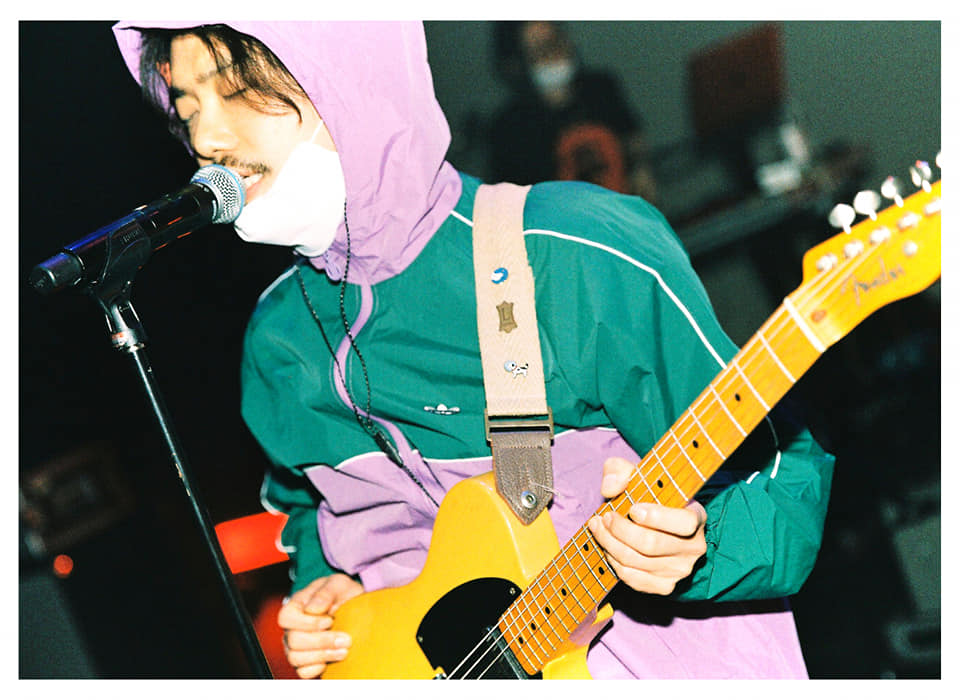

Oh Juhwan
Vocal(83년생)
17살 때 학교 그만두고 다양한 일을 해왔어요. 나이트클럽 밴드에서 노래를 불렀고요.
동대문에서 의류 도소매 사업도 했죠.
모델 에이전시 가르텐 소속 패션모델로 잡지와 광고일을 7년 정도 했고, 신문에 칼럼을 기고하거나 책을 내기도 했어요.
천연 향초 회사를 창업하기도 했습니다. 방송에서는 KBS 생생정보통 리포터로 활동했고, 내셔널 지오그래픽 채널, EBS 세계 견문록 아틀라스라는 여행 프로그램에도 출연했죠.
기타 레슨도 오랫동안 했어요. 하루에 3, 4명 정도 되는 사람들을 가르쳤는데, 지금도 제 핸드폰에는 ‘기타 레슨 누구누구’라는 이름으로 몇백 명이 저장되어 있습니다.
새로운 일을 시작할 때마다 ‘대박 터트릴 거야’, ‘돈을 많이 벌 거야’라는 식으로 접근한 적은 없어요.
돈을 많이 벌고 싶었다면 옷 만드는 일을 계속했을 거예요. 이 일을 했을 때 수입이 정말 좋았거든요.
그런데도 저는 뮤지션으로 살고 싶은 마음이 더 강해서, 의류 사업을 접고 홍대로 넘어와 음악에 매진했어요.
사업이 잘되다 보니 돈 버는 재미에 빠져 음악과 점점 멀어지는 것 같았거든요.
그때 저는 ‘행복의 효용 가치’를 생각했던 것 같아요. 옷 만드는 일을 하면 더 많은 돈을 벌고, 더 좋은 차를 탈 수는 있겠지만,
거기에서 얻을 수 있는 행복의 크기가 음악을 하는 것만큼 크진 않다고 본 거죠.
음악은 제가 사랑하는 일이자, 끝까지 놓지 못하는 일이거든요.
마치 사랑하는 사람이 있으면 고백을 할 수밖에 없는 것처럼요.
음악에 완전히 사로잡혀서 이것을 안 하고는 못 배기는 것 같아요. 다른 대안이 없다고 느낄 만큼요.